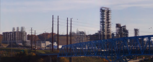
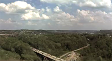

Shell Plastics East

Shell Plastics West
Clairton Coke Works
Clairton Coke Works 2
Edgar Thomson South
Metalico
Realtime cam down - Click to view past footage
Edgar Thomson West
Realtime cam down - Click to view past footage
Edgar Thomson North
Realtime cam down - Click to view past footage
Irvin
Realtime cam down - Click to view past footage
North Shore
Realtime cam down - Click to view past footage

Mon. Valley
Realtime cam down - Click to view past footage
Downtown
Realtime cam down - Click to view past footage
Oakland